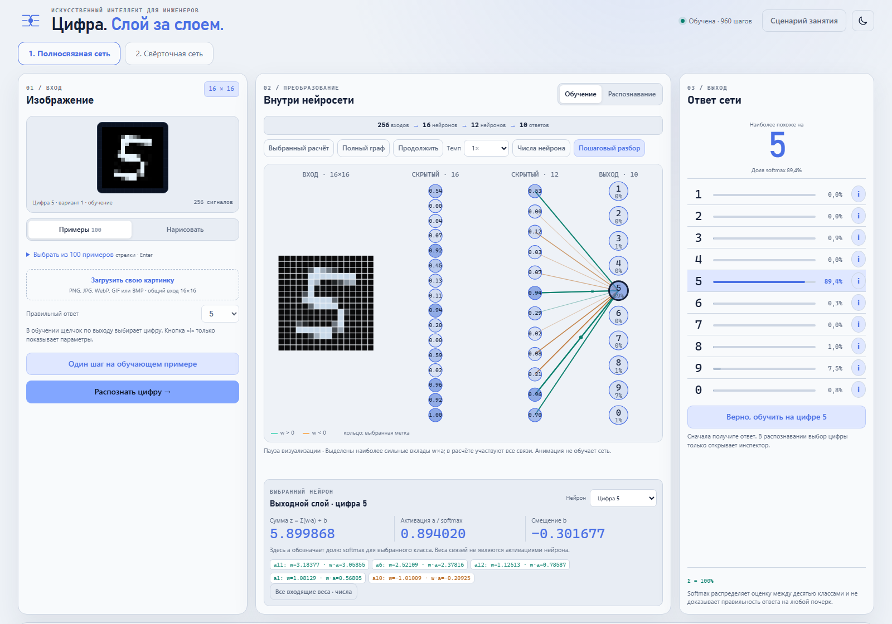
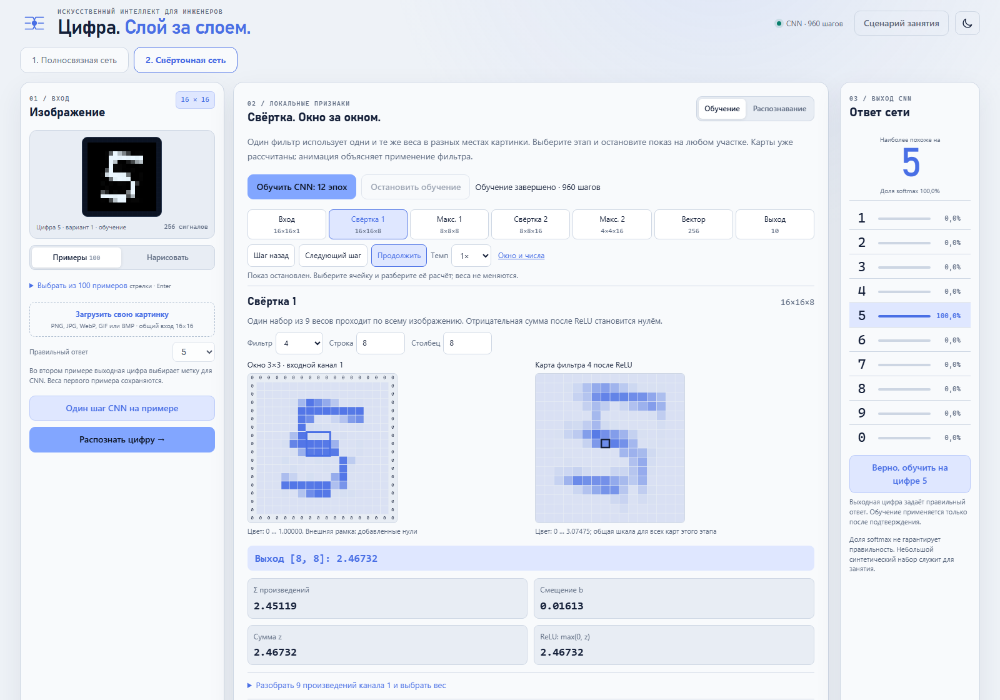

1.Что на экране
Три части экрана
Экран разделён на три части. Сигнал идёт по ним слева направо.
| Часть | Что там |
|---|---|
| 01 / Вход (слева) | Холст для рисунка, 100 готовых примеров и загрузка своей картинки. Перед подачей в сеть программа обрезает пустые края рисунка, масштабирует его и ставит в центр поля 16 × 16 клеток. Каждая клетка – одно число, всего 256 чисел |
| 02 / Преобразование (в центре) | Сама нейросеть: слои, связи, числа внутри нейронов |
| 03 / Выход (справа) | Ответ сети: десять цифр 1 … 9, 0 и доля уверенности для каждой |
Обучение на всём наборе, история обучения и кнопки сохранения у полносвязной сети – под основной частью экрана, у свёрточной – в центральной части.

Переключатели и кнопки вверху
- «1. Полносвязная сеть» и «2. Свёрточная сеть» – две сети, устроенные по-разному. Рисунок общий, а знания у каждой сети свои: обучение одной не меняет другую. Как они устроены – в разделах полносвязная сеть изнутри и свёрточная сеть изнутри.
- «Обучение» и «Распознавание» (в центральной части) – в режиме «Распознавание» сеть только отвечает, обучение выключено, и случайным щелчком её не испортить.
- «Крупно» увеличивает весь интерфейс – удобно на большом экране. «Сценарий занятия» – короткая памятка, что и в каком порядке показывать. «Инструкция» открывает эту страницу.
2.Первые шаги за 10 минут
- Посмотрите на необученную сеть. Если у сети вверху написано «Случайные веса» (у свёрточной – «CNN · случайные веса»), она ещё ничего не знает. Нажмите «Нарисовать», нарисуйте мышью крупную цифру и нажмите «Распознать цифру». Ответ зависит только от случайных весов, доли у цифр могут быть какими угодно. Сеть уже собрана, но ничего не знает: знания появятся только после обучения.
- Научите сеть на одном примере. Если ответ неверный, щёлкните правильную цифру справа и подтвердите «Да, обучить» (у свёрточной сети – «Да, обучить CNN»). Если ответ верный – нажмите «Верно, обучить на цифре N». Это ровно один шаг обучения. Пока вы не подтвердили, сеть не меняется, а «Отмена» оставляет её как была. Что происходит при этом шаге – в разделе как сеть учится.
- Проверьте, что изменилось. Снова нажмите «Распознать цифру». Доля правильной цифры выросла. Но по одному примеру всему не научишься: на другом рисунке сеть может ошибиться.
- Обучите сеть на наборе. Нажмите «Быстро обучить: 12 эпох». Сеть пройдёт 12 раз по 80 обучающим примерам. Ещё 20 примеров отложены: на них сеть не учится, по ним проверяют, как она справляется с незнакомыми картинками. В истории видно, как падает ошибка (loss) и растёт доля верных ответов. Повторное нажатие продолжает обучение той же сети, а не начинает его заново.
- Нажмите «Очистить холст», нарисуйте свою цифру ещё раз и сравните ответ с тем, что было до обучения.
- Повторите то же для свёрточной сети: переключитесь на «2. Свёрточная сеть», нажмите «Распознать цифру», затем «Обучить CNN: 12 эпох».
Обученную модель можно сохранить в файл и вернуть – см. сохранение модели.
3.Полносвязная сеть изнутри
Как проходит сигнал
Рисунок превращается в 256 чисел – по одному на клетку. Дальше сигнал проходит через слои: 256 входов, затем слои из 16 и 12 нейронов, на выходе 10 ответов.
- Нейрон берёт все числа предыдущего слоя, умножает каждое на свой вес (
w), складывает и добавляет смещение (b). Получается суммаz. - В двух скрытых слоях (16 и 12 нейронов) сумма проходит через функцию активации sigmoid: она сжимает любое число в промежуток от 0 до 1. Результат
a– это сигнал нейрона для следующего слоя. - На выходе десять сумм вместе превращаются в доли softmax: в сумме они дают 100 %, и сеть называет цифру с наибольшей долей.
Всего в этой сети 4 408 весов и 38 смещений, вместе 4 446 чисел. Всё, что сеть «знает», хранится в этих числах, и больше нигде.
Как посмотреть числа нейрона
Нажмите «i» рядом с любой выходной цифрой: появятся сумма z, доля softmax, смещение b и пять связей с самым большим вкладом. Цвет связи на графе показывает знак веса (обозначения w > 0 и w < 0 – в нижнем левом углу графа): положительный вес усиливает сигнал, отрицательный ослабляет. Анимация после распознавания только показывает, как идёт сигнал, а веса не меняет.
Как сеть учится
Сеть сравнивает свой ответ с правильным и считает ошибку (loss). Затем для каждого веса вычисляет градиент – насколько быстро и в какую сторону растёт ошибка, если этот вес увеличить. Чтобы ошибка уменьшилась, вес сдвигают в обратную сторону на маленький шаг: w ← w − η · градиент, где η – скорость обучения.
Пошаговый разбор
Расчёт одного шага обучения можно пройти по этапам. Распознайте рисунок и нажмите «Пошаговый разбор». Сначала проверьте поле «Правильная цифра для обучения»: для своего рисунка там по умолчанию стоит ответ сети, а он может быть неверным. Для готового примера из набора поле заполнено правильной цифрой и не меняется.
Затем пройдите шесть этапов: вход, сумма, активация, ошибка, градиент, новый вес. На экране показан расчёт для одной выбранной связи, а кнопка «Применить один шаг» обновляет все веса и смещения сети. Пока она не нажата, сеть не меняется.
4.Свёрточная сеть изнутри
Фильтры
Свёрточная сеть смотрит на картинку через маленькое окно 3 × 3 клетки, которое скользит по всему рисунку. У окна 9 весов, и одни и те же веса работают во всех местах картинки. Такое окно называют фильтром: обученный фильтр откликается на свой признак – вертикальный штрих, угол, изгиб – где бы он ни находился.
Слои по порядку
- Свёртка 1 – 8 фильтров 3 × 3, получается 8 карт признаков 16 × 16. После свёртки отрицательные значения заменяются нулём, положительные остаются как есть (функция ReLU).
- Максимум 1 (на кнопке – «Макс. 1») – из каждых четырёх соседних клеток остаётся наибольшее значение, карта уменьшается вдвое: 8 × 8.
- Свёртка 2 – 16 фильтров; каждый смотрит сразу на все 8 карт первого слоя. После неё – снова ReLU.
- Максимум 2 – ещё одно уменьшение вдвое: 4 × 4.
- Разворачивание (на кнопке – «Вектор») – 16 карт 4 × 4 выстраиваются в одну строку из 256 чисел.
- Выход – 10 ответов с долями softmax.
Выберите этап, фильтр и клетку – будут видны окно, произведения его чисел на веса фильтра, сумма и результат.

Чем она отличается от полносвязной
Параметров у свёрточной сети даже меньше, чем у полносвязной, – 3 818. На этом учебном наборе она обычно точнее: после сброса и 12 эпох полносвязная сеть узнаёт 15 из 20 проверочных примеров, свёрточная – все 20. Одна из причин – свёрточная сеть ищет одни и те же мелкие признаки по всей картинке. На ваших собственных рисунках результат может быть другим, проверьте это в опыте 2.
5.Сохранение модели
Сеть работает прямо в вашем браузере: рисунок и модель на сервер не отправляются. Онлайн-версия, как и весь сайт pikov.expert, считает посещения и переходы по ссылкам.
Рисунок живёт только на открытой странице и после её перезагрузки пропадает. Обученные модели браузер сохраняет сам, если это разрешено в его настройках, и покажет их при следующем открытии лаборатории с того же адреса. Если лаборатория сообщит, что сохранить модель не удалось, сохраните её в файл.
Кнопки сохранения у каждой сети свои:
| Что сделать | Полносвязная сеть | Свёрточная сеть |
|---|---|---|
| Вернуть случайные веса | «Сбросить» | «Сбросить CNN» |
| Сохранить модель в файл | «Экспорт» | «Экспорт CNN» |
| Загрузить модель из файла | «Импорт» | «Импорт CNN» |
В файл попадает только модель, рисунок не сохраняется.
6.Опыты для самопроверки
В каждом опыте есть вопрос. Попробуйте и ответьте на него сами. Новые штрихи добавляются к прежним, поэтому перед каждой новой цифрой нажимайте «Очистить холст». Чтобы сравнить две сети, давайте им один и тот же рисунок.
Опыт 1. Как программа видит рисунок
Нарисуйте цифру маленькой в углу холста и посмотрите на поле 16 × 16, которое уходит в сеть. Где оказалась цифра и какого она размера? Почему программа так делает? Подсказка – в разделе три части экрана.
Опыт 2. Две сети на равных
Сбросьте обе сети и обучите каждую по 12 эпох. Нарисуйте несколько своих цифр. Какая сеть чаще отвечает правильно?
Опыт 3. Толщина и наклон
Нарисуйте одну и ту же цифру тонко, толсто, с наклоном. Как меняются доли softmax?
Опыт 4. Не цифра
Нарисуйте букву или крестик. Что ответит сеть? Значит ли доля 90 %, что ответ правильный?
Опыт 5. Один шаг
Возьмите необученную сеть и несколько раз подряд обучите её на одном и том же рисунке. Что станет с ответами на другие цифры?
Опыт 6. Обучающие и проверочные примеры
В истории эпох сравните точность на обучении (Train) и на проверке (Validation). Почему на проверке она обычно ниже?
Опыт 7. Внутри нейрона
Нажмите «i» у выходной цифры, которую назвала полносвязная сеть. Какие связи влияют на неё сильнее всего? Где смотреть – в разделе как посмотреть числа нейрона.
7.Частые вопросы
Почему моя цифра распознаётся неправильно, хотя точность 75 %?
75 % – доля верных ответов на 20 отложенных примерах этого набора. Ваш рисунок может сильно отличаться от них толщиной, наклоном, формой.
Сеть «уверена на 99 %» – значит, ответ правильный?
Нет. Softmax всегда делит 100 % между десятью цифрами, которые знает сеть. На букве или крестике сеть тоже уверенно назовёт какую-нибудь цифру. Пустой холст лаборатория распознавать не даёт.
Почему после обучения на моём рисунке другие цифры стали распознаваться хуже?
Один шаг подстраивает веса под один пример. Чтобы сеть узнавала разные рисунки, нужны эпохи на многих примерах.
Почему свёрточная сеть на этом наборе точнее?
Она ищет одни и те же признаки (штрихи, углы) по всей картинке. Но это результат на маленьком учебном наборе, а не правило для любых рисунков.
На каких примерах учится сеть?
В наборе 100 картинок 16 × 16: на 80 сеть учится, 20 отложены для проверки. Картинки создала программа лаборатории: по десять вариантов каждой цифры, с разными сдвигами, наклонами, толщиной и шумом. Это маленький учебный набор, поэтому высокая точность на нём не значит, что сеть узнает любой почерк.
Где тут «интеллект»?
Только в настроенных числах-весах. Большие языковые модели устроены по тем же принципам, но параметров у них в миллионы раз больше.
8.Словарик
| Слово | Что значит |
|---|---|
| Нейрон | Узел сети: складывает входящие сигналы с весами и пропускает сумму через функцию активации. См. как проходит сигнал |
Вес (w) |
Число на связи между нейронами: насколько сильно и в какую сторону сигнал влияет на следующий нейрон |
Смещение (b) |
Добавка к сумме нейрона, сдвигает порог его срабатывания |
| Функция активации | Превращает сумму нейрона в его выходной сигнал. Здесь это sigmoid (в скрытых слоях полносвязной сети) и ReLU (после свёрток) |
| Softmax | Превращает десять выходных чисел в доли, которые в сумме дают 100 % |
| Ошибка (loss) | Число, которое показывает, насколько ответ сети далёк от правильного |
| Градиент | Показывает, как растёт ошибка при изменении веса. При обучении вес сдвигают в обратную сторону. См. как сеть учится |
| Эпоха | Один проход обучения по всем обучающим примерам |
| Фильтр (свёртка) | Окно с весами, которое скользит по картинке и находит свой признак. См. фильтры |
| Обучающие и проверочные примеры | На первых сеть учится, по вторым проверяют, как она справляется с незнакомыми картинками |
Другие термины курса простыми словами – в глоссарии курса «Искусственный интеллект для инженеров».
9.Если что-то не работает
| Что случилось | Что сделать |
|---|---|
| Мелкие подписи | Кнопка «Крупно» вверху или масштаб браузера: Ctrl и «+» |
| Сеть после опытов отвечает странно | Нажмите «Сбросить» («Сбросить CNN») у нужной сети и обучите её заново или загрузите сохранённую модель через «Импорт» («Импорт CNN») |
| Нет обученной модели на другом компьютере, в другом браузере или по другому адресу | Модель хранится в браузере и привязана к адресу лаборатории. Перенести можно через «Экспорт» и «Импорт», у каждой сети отдельно. См. сохранение модели |
| Нет интернета | Лабораторию можно запустить на своём компьютере без интернета, инструкция – в README репозитория |